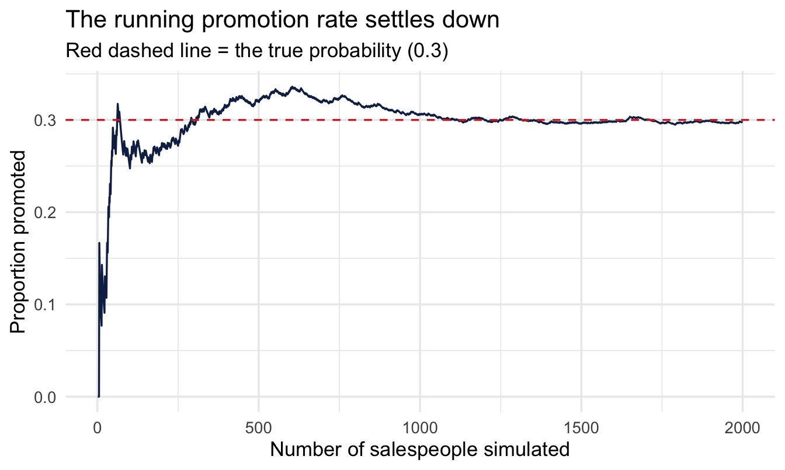
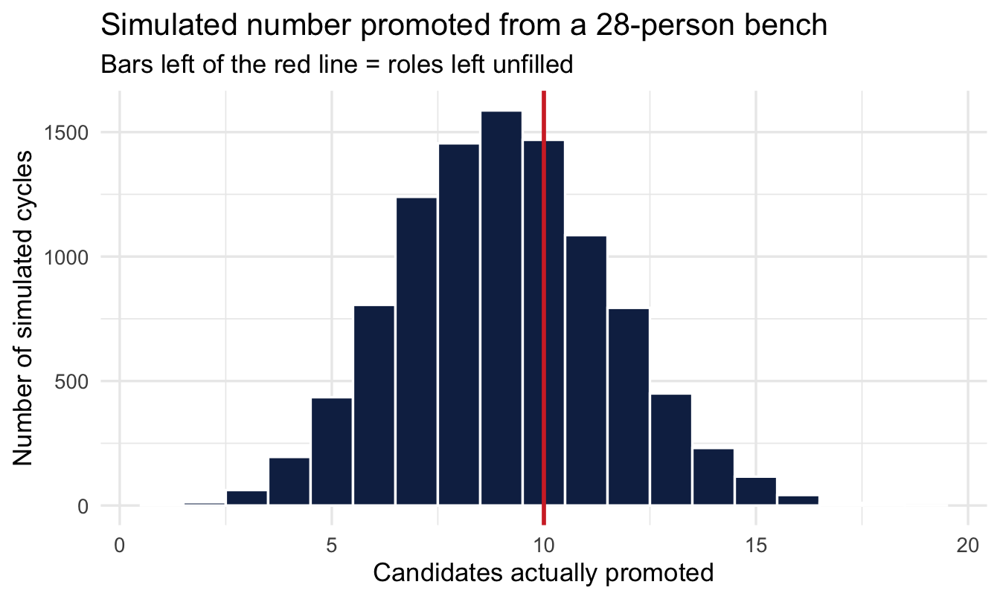

library(tidyverse)
library(peopleanalyticsdata)
theme_set(theme_minimal(base_size = 13))
set.seed(2026)
data("salespeople", package = "peopleanalyticsdata")
# Chapter 1 found a single missing value in each of `sales`,
# `customer_rate` and `performance`; dropping those rows here keeps
# the rest of this chapter's code simple.
salespeople <- salespeople |> drop_na(sales, customer_rate, performance, promoted)2 Thinking in Chances
Welcome back
Last chapter we described data. Today we learn the language of uncertainty — probability.
Still no heavy maths: we build every idea by counting in our data and simulating on the computer.
What you’ll be able to do by the end
- Read a probability two ways — as a long-run frequency and as a degree of belief — and know when each applies
- State the core rules of probability in notation and in English
- Estimate probabilities directly from data by counting
- Combine events with the addition and multiplication rules, including the catches in both
- Compute and interpret conditional probability
- Use simulation to answer a real business question
Why does a People Analytics book start here?
Important
Bayesian statistics is nothing more than a disciplined way of updating probabilities as evidence arrives. If you’re comfortable with probability — especially conditional probability — the rest of this book is mostly bookkeeping. So we’ll take our time.
2.1 Setup
2.2 What is a probability?
2.2.1 The working definition
A probability is a number between 0 and 1 measuring how likely something is. Zero means it cannot happen; one means it certainly will; everything interesting lives in between.
The usual definition goes:
the proportion of times it would happen if we could repeat the situation many times.
That’s the long-run frequency reading, and it’s the one most people were taught. Hold onto it, but notice its limitation early: an awful lot of the questions you’ll be asked at work happen exactly once. Will this candidate accept the offer? Will this reorganisation reduce attrition? You cannot repeat next Tuesday two thousand times.
So there’s a second reading, and this book will lean on it heavily: a probability is a degree of belief — how confident you are, expressed as a number, given what you currently know. The two readings agree whenever both apply. The belief reading just also works for the one-off questions, which is most of them.
Note
This is not a philosophical aside you can skip. The difference between these two readings is, more or less, the difference between classical and Bayesian statistics — and it’s why a Bayesian can say “there’s an 85% chance this team is genuinely underperforming” while a frequentist, strictly, cannot.
2.2.2 You already reason this way
“There’s a good chance she gets the promotion.” · “Most applicants from that channel accept the offer.” · “About 1 in 10 new hires leave in the first year.”
Statistics just makes this precise enough to calculate with.
2.2.3 A coin, and a magician
Here’s a question everyone answers instantly. I toss a coin. What’s the probability of heads?
Fifty per cent, obviously. But pause on why you believe that. You haven’t tossed this coin. You’ve collected no data on it whatsoever. You believe it because of what you know about coins in general — they’re roughly symmetric, they have two sides, nothing about the situation favours one.
Now change one detail. The coin was handed to you by a magician.
Same coin, same physical symmetry, same argument as before — and almost nobody still says 50%. Your belief moved sharply, and it moved without a single new observation of the coin itself. What changed was your information about where the coin came from.
Important
That’s the whole idea in one example. A probability isn’t only a property of the object. It’s a statement about the object given what you know — and when what you know changes, the number should change too.
So how would you settle it? You’d toss the thing. And the more times you tossed it, the more the running proportion of heads would tell you what you’re dealing with — the magician’s coin separating itself from an honest one as the evidence piles up.
2.2.4 Watch a probability settle
Let’s do exactly that, in the setting we care about. Imagine a salesperson gets promoted with true probability 0.3 — a value we know here only because we’re inventing the data. We’ll generate salespeople one at a time and track the running proportion promoted, just as you’d track the running proportion of heads.
1set.seed(202)
true_p <- 0.3
n <- 2000
2draws <- rbinom(n, size = 1, prob = true_p)
running <- tibble(
person = 1:n,
3 running_rate = cumsum(draws) / person
)
ggplot(running, aes(x = person, y = running_rate)) +
geom_line(colour = "#122a52") +
geom_hline(yintercept = true_p, colour = "#d32f2f", linetype = "dashed") +
labs(title = "The running promotion rate settles down",
subtitle = "Red dashed line = the true probability (0.3)",
x = "Number of salespeople simulated", y = "Proportion promoted")- 1
- Seeded immediately before the simulation, so this figure is the same every time the book is built and every time you re-run the chunk.
- 2
-
rbinom()withsize = 1is a coin toss: 2,000 independent yes/no outcomes, each with a 30% chance of a 1. Here 1 means promoted. - 3
-
cumsum()gives the running total of promotions; dividing by the person number turns it into the running rate. This is the whole trick behind the plot.

ImportantThree lessons
- Small samples are unreliable. Early on the running rate swings wildly — at 20 people it could plausibly read 0.15 or 0.45. This is the single most under-appreciated fact in HR reporting.
- It does settle. Given enough data the estimate converges on the truth. That’s the law of large numbers, and it’s why more data helps.
- Probability says nothing about the next person. It describes the pattern over many, not the individual in front of you.
2.2.5 The rules of probability
Four rules cover almost everything. Each one is stated in notation and in English, and none of them is harder than the English version.
Rule 1 — probabilities live between 0 and 1.
0 \le P(A) \le 1
The chance of anything is somewhere between impossible and certain. If a calculation ever hands you 1.4, you have made an error, and it is usually the one in Rule 3.
Rule 2 — the possibilities add up to 1.
P(A_1) + P(A_2) + \dots + P(A_k) = 1
If you list every outcome that could happen, and no two of them can happen together, their probabilities must total exactly 1. Something has to happen.
This rule has a consequence people genuinely resist:
ImportantWhen a new possibility appears, everything else must get less likely
Three internal candidates are shortlisted for a director role, and you judge their chances at 50%, 30% and 20%. That’s a complete list, and it sums to 1.
A fourth candidate now enters the process — strong, credible, say a 30% chance in their own right. The other three probabilities must come down, because the four numbers still have to total 1. Nobody’s CV changed. Nobody interviewed worse. Their chances fell anyway.
This feels wrong to people, and it’s the source of a lot of muddled thinking about hiring odds, promotion odds and forecasting. A probability is never a property of one candidate alone — it’s a share of a fixed total, and the total is always 1.
Rule 3 — the complement.
P(\text{not } A) = 1 - P(A)
The chance something doesn’t happen is one minus the chance it does. Obvious written down, and constantly useful: “at least one” questions are almost always easier to answer as “one minus the chance of none”. If 30% of a bench gets promoted, 70% doesn’t.
Rule 4 — conditions only ever narrow things.
\text{if } B \text{ implies } A, \text{ then } P(B) \le P(A)
A more specific claim can never be more likely than the general one it sits inside. We’ll come back to this one in a moment, because it’s the rule people break most often.
2.2.6 Probability straight from the data
Because promoted is coded 0/1, the probability someone is promoted is just its mean:
salespeople |>
summarise(
n = n(),
n_promoted = sum(promoted),
p_promoted = mean(promoted)
) n n_promoted p_promoted
1 350 113 0.3228571This is a marginal probability: the overall chance, ignoring everything else.
2.3 Combining events
2.3.1 Two questions, two rules
- OR — what’s the chance of this or that? → add
- AND — what’s the chance of both together? → multiply
Both have a catch, and almost everybody gets the second one wrong.
2.3.2 The addition rule (OR)
P(A \text{ or } B) = P(A) + P(B) \quad \text{— if they can't both happen}
Performance is exactly one of four ratings — nobody is rated both 3 and 4 — so the chance of either of two ratings is simply the sum of their proportions:
salespeople |>
count(performance) |>
mutate(prob = n / sum(n)) performance n prob
1 1 60 0.1714286
2 2 110 0.3142857
3 3 125 0.3571429
4 4 55 0.1571429The chance of a salesperson being rated 3 or 4 is those two numbers added together.
ImportantThe catch: only add when they can’t overlap
P(A \text{ or } B) = P(A) + P(B) - P(A \text{ and } B)
Add the two, then subtract the overlap, or you’ll count it twice.
Say 40% of your employees completed the leadership programme and 30% received a top performance rating. The share who did either is not 70%. Plenty of people did both, and adding naively counts them once as a graduate and again as a top performer. Subtract the overlap and the answer might be 55%.
The tell is easy: if two things can be true of the same person, you cannot just add. Performance ratings are safe because they’re mutually exclusive by construction. Almost nothing else in HR is.
2.3.3 The multiplication rule (AND)
P(A \text{ and } B) = P(A) \times P(B) \quad \text{— if they're independent}
Independent means knowing one tells you nothing about the other.
Suppose roughly 25% of salespeople are top performers (performance == 4) and about 30% get promoted overall. If those were unrelated, the chance of being both would be roughly 0.25 × 0.30 ≈ 0.075. Let’s check reality:
p_top <- mean(salespeople$performance == 4)
p_promoted <- mean(salespeople$promoted)
predicted_if_independent <- p_top * p_promoted
actual_both <- mean(salespeople$performance == 4 & salespeople$promoted == 1)
tibble(predicted_if_independent, actual_both)# A tibble: 1 × 2
predicted_if_independent actual_both
<dbl> <dbl>
1 0.0507 0.08572.3.4 What that mismatch means
The actual joint probability is well above the “independent” prediction.
Important
So performance and promotion are not independent: knowing one changes the chance of the other — which is exactly what we’d hope a performance rating would do.
When events aren’t independent, the general rule takes over:
P(A \text{ and } B) = P(A) \times P(B \mid A)
The chance of both is the chance of the first, times the chance of the second given the first has happened. That second term is a conditional probability, and it’s the whole of the next section.
2.3.5 The rule almost everyone breaks
Look at what multiplication does. Both probabilities are at most 1, so multiplying them together can only ever make the number smaller. That’s Rule 4 from earlier, and it holds without exception:
P(A \text{ and } B) \le P(A) \quad\text{and}\quad P(A \text{ and } B) \le P(B)
Adding a condition can never make something more likely.
Stated like that it’s obvious. In practice people violate it constantly, because a more detailed story sounds more plausible than a vague one:
NoteTwo ways to see it go wrong
The forecast. “There’s a 20% chance of rain tomorrow.” “And a 40% chance of rain between 2pm and 3pm.” These cannot both be true. Raining in that hour is raining tomorrow — it’s a subset of it — so its probability cannot be larger. Narrowing the window can only lower the number.
The candidate. “What’s the chance this candidate accepts?” — 70%. “What’s the chance they accept and are still here in two years?” The second must be at most 70%, because every person in the second group is already in the first. Yet ask the question in that order and people routinely give a higher figure for the richer story, because it paints a more convincing picture.
Psychologists call this the conjunction fallacy — Tversky and Kahneman’s famous demonstration had people rate “bank teller and active in the feminist movement” as more likely than “bank teller”, which is impossible.
Important
The practical version, worth remembering next time you’re asked for a forecast: every extra condition you attach to a prediction makes it less likely to come true, not more. Detail feels like confidence. It’s the opposite.
TipFor the ML/DS crowd
The multiplication rule for independent events is the entire mathematical foundation of a naive Bayes classifier — it multiplies together the probability of each feature as if every feature were independent given the class, which is almost never strictly true (hence “naive”) but works surprisingly well in practice. The independence check above is exactly the kind of test you’d want to run before trusting that assumption for a real feature set.
2.4 Conditional probability
2.4.1 The idea
Conditional probability asks: once I know a salesperson is a top performer, what’s the chance they’re promoted? We write it P(promoted | performance = 4) — the “|” means given.
Note
performance in this dataset is an integer from 1 to 4, where 4 is the top rating — so performance == 4 is simply how a high performer is coded here. Every organisation codes its ratings differently, and getting this backwards is a common and embarrassing way to invert a finding. Check the coding before you condition on it.
To compute it from data you don’t need a formula. Just restrict to the group and take the mean.
salespeople |>
group_by(performance) |>
summarise(
n = n(),
p_promoted_given_performance = mean(promoted)
)# A tibble: 4 × 3
performance n p_promoted_given_performance
<int> <int> <dbl>
1 1 60 0.167
2 2 110 0.227
3 3 125 0.384
4 4 55 0.5452.4.2 Knowing something changes everything
Note
Same company, same promotion process — but a very different, and far more useful, probability once you condition on performance. Good prediction is mostly about finding the right things to condition on.
Your turn
Compute P(promoted | a customer rating above the median) — split customer_rate at its median and compute the promotion rate for each half. Does a higher customer rating change the odds?
# Your code here2.4.3 Where we’re heading
ImportantThe flip
Today we computed P(promoted | performance) — easy, because we could count.
From Chapter 4 we want the harder direction: P(the true rate | the data we saw). Bayes’ theorem is the bridge between those two. Everything you did today is the foundation for it.
2.5 Simulation for a real decision
2.5.1 The succession-pipeline problem
Suppose your organisation has 10 regional manager roles opening up next year, filled from a bench of “ready now” candidates. Historically, about 30% of bench candidates in any given cycle end up actually being promoted into a role (the rest aren’t ready when the role opens, decide to leave, or the timing doesn’t line up).
- Keep exactly 10 candidates on the bench → you’ll almost certainly come up short
- Keep far too many → you’re investing development budget in people who’ll never get the call
How big should the bench be? There’s no formula on the wall — but we can simulate it.
2.5.2 Simulate a cycle
Suppose you keep 28 candidates on the bench, each independently promoted with probability equal to our observed rate.
set.seed(203)
p_promoted <- mean(salespeople$promoted)
roles_open <- 10
bench_size <- 28
n_sims <- 10000
promoted_count <- rbinom(n_sims, size = bench_size, prob = p_promoted)
cat("P(fewer than 10 promoted — roles left unfilled):",
round(mean(promoted_count < roles_open), 3), "\n")P(fewer than 10 promoted — roles left unfilled): 0.58 cat("P(5+ more candidates promoted than roles available):",
round(mean(promoted_count > roles_open + 5), 3), "\n")P(5+ more candidates promoted than roles available): 0.006 tibble(promoted_count) |>
ggplot(aes(x = promoted_count)) +
geom_histogram(binwidth = 1, fill = "#122a52", colour = "white") +
geom_vline(xintercept = roles_open, colour = "#d32f2f", linewidth = 1) +
labs(title = "Simulated number promoted from a 28-person bench",
subtitle = "Bars left of the red line = roles left unfilled",
x = "Candidates actually promoted", y = "Number of simulated cycles")
2.5.3 The trade-off
There is no “right” answer — only a choice between the risk of unfilled roles and the cost of an oversized bench.
Important
Statistics gives you the risks. Choosing between them is a management decision — one you can now make with numbers rather than instinct.
Your turn
Change bench_size to 20, then to 35. What size would you recommend, and why?
# Your code hereOn the job
ImportantWhy this matters day to day
Almost every People Analytics question is a conditional-probability question in disguise: does the chance of Y change when X is different? “Are internal candidates more likely to succeed than external hires?” “Does completing the training programme change retention?” Learning to phrase questions this way — and estimate them by conditioning — is the foundation of every model in this book.
Summary
NoteToday you learned
- A probability is both a long-run frequency and a degree of belief. The belief reading is the one that works for the one-off questions you’re usually asked — and it’s the Bayesian one.
- Probabilities sum to 1, so a new possibility lowers everything else. Nobody’s CV changed; their odds fell anyway.
- Estimates settle as data grows, and swing wildly before they do.
- For a 0/1 variable, the probability of the event is its mean.
- Add for OR — but subtract the overlap unless the events truly can’t co-occur.
- Multiply for AND when independent, otherwise P(A) × P(B | A). Naive Bayes classifiers lean on exactly that first case.
- Every extra condition makes something less likely. A more detailed forecast is a less probable one, however convincing it sounds.
- Conditional probability P(A | B) is computed by restricting to group B — the seed of Bayes’ theorem.
- Simulation turns a probability into a business risk you can act on.
Next chapter
Distributions, sampling and the idea of a model. We meet the Normal, Binomial and Poisson distributions, and learn why two samples from the same population never give quite the same answer.